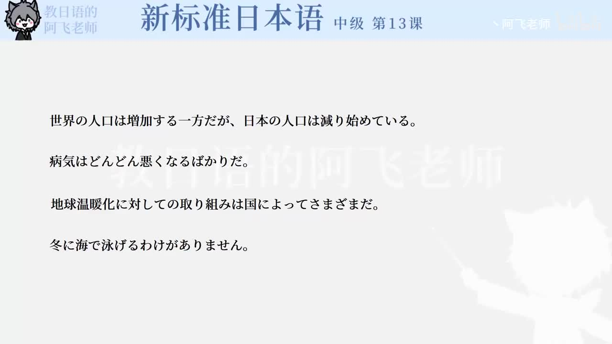

Bilibili P160 · Grammar
スピーチの依頼：郑重请求与委婉表达
围绕婚宴致辞请求场景，整理正式开场、郑重拜托、尊他请求、传闻说明、无法实现和安排决定等表达。
全篇听力精讲
按 9 个语法点轮播。每项包含核心含义、接续、常见用法、易错提醒、例句读音、中文意思和断句结构。
这一讲的语法地图
请求前的缓冲お忙しいところ申し訳ありませんが
郑重提出请求折り入って / 〜たいと思いまして
敬语请求〜ていただければありがたい
安排与传闻〜ことになりました / そうです
语法精讲
核心词汇与搭配
练习与复习
来源说明：视频标题、时长、CID 和首帧来自 Bilibili 公开视频接口；语法内容依据新标日中级第13课「スピーチの依頼」会话场景与本地教材数据整理。